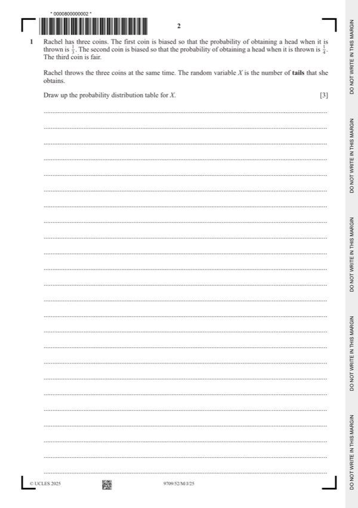

Question 1

Original paper page 2
Part 1 — solution
- [B1] Table with correct values of x and at least one non
Mark points
- [B1] Table with correct values of x and at least one non
Part 1 — solution
- {10C3 0.87 0.23 + 10C4 0.86 0.24 + … + 0.210} 0 < p < 1 , x 0 or 10
- [A1] Correct un-simplified expression
- [B1] 0.677 < p ⩽ 0.678
Mark points
- {10C3 0.87 0.23 + 10C4 0.86 0.24 + … + 0.210} 0 < p < 1 , x 0 or 10
- [A1] Correct un-simplified expression
- [B1] 0.677 < p ⩽ 0.678